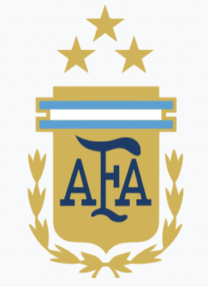

|  | |
|---|---|
| Nickname(s) | La Albiceleste |
| Association | Argentine Football Associaton (AFA) |
| Confederation | CONMEBOL (South America) |
| Head Coach | Lionel Scaloni |
| Captain | Lionel messi |
| Most caps | Lionel Messi (174) |
| Top scorer | Lionel Messi (102) |
| Home stadium | Various |
| FIFA code | ARG |
| FIFA Ranking | |
| Current | 2 (22 December 2022) |
| Highest | 1 (March 2007, October 2007 - June 2008, July - October 2015, April 2016 - April 2017) |
| Lowest | 20 (August 1996) |
| World Cup | |
| Appearances | 18 (first in 1930) |
| Best Result | Champions (1978, 1986, 2022) |
| Copa America | |
| Appearances | 43 (first in1916) |
| Best Result | Champions (1921, 1925, 1927, 1929, 1937, 1941, 1945, 1946, 1947, 1955, 1957, 1959, 1991, 1993, 2021) |
| Panamerican Championship | |
| Appearances | 2 (first in1956) |
| Best Result | Champions(1960) |
| CONMEBOL-UEFA Cup of Champions | |
| Appearances | 2 (first in 1993) |
| Best Result | Champions(1993, 2022) |
| FIFA Confederations Cup | |
| Appearances | 3 (first in1992) |
| Best Result | Champions (1992) |
This article is about the men's team. For the women's team, see Argentina women's national football team.
The Argentina national football team (Spanish: Selección de fútbol de Argentina) represents Argentina in men's international football and is administered by the Argentine Football Association, the governing body for football in Argentina.
Nicknamed La Albiceleste ('The White and Sky Blue'), they are the reigning world champions, having won the most recent World Cup in 2022. Overall, Argentina has appeared in a World Cup final six times; a record equalled by Italy and surpassed only by Brazil and Germany. Argentina played in the first ever final in 1930, which they lost 4–2 to Uruguay. The next final appearance came 48 years later, in 1978, when the team captained by Daniel Passarella defeated the Netherlands 3–1 in extra time, being crowned world champions for the first time. Captained by Diego Maradona, Argentina won their second World Cup eight years later, in 1986, with a 3–2 final victory over West Germany. They reached the final once more under the guidance of Maradona, in 1990, but were ultimately beaten 1–0 by West Germany. A few decades later, Argentina led by Lionel Messi made their fifth final appearance in 2014, losing to Germany 1–0 after extra time. In 2022, again captained by Messi, they were crowned the world champions for the third time, the fourth-most of any country, beating France 4–2 on penalties, following a 3–3 draw after extra time.
The team's World Cup–winning managers are César Luis Menotti in 1978, Carlos Bilardo in 1986 and Lionel Scaloni in 2022. Since the Golden Ball for tournament's best player has been officially awarded by FIFA from 1982, Argentina players have won it thrice; Maradona in 1986 and Messi in 2014 and 2022. Argentines Guillermo Stábile in 1930 and Mario Kempes in 1978 were the top-scoring players at their respective World Cups.
Argentina has also been very successful in the Copa América, winning it 15 times, a record shared with Uruguay, most recently winning the 2021 edition. The team also won the inaugural FIFA Confederations Cup in 1992. Argentina is the most successful team in the CONMEBOL–UEFA Cup of Champions, having won it twice, in 1993 and 2022. Argentina is known for having rivalries with Brazil, Uruguay, England, Germany and the Netherlands.[12][13] As of 2022, Argentina holds the record for most official titles won by a men's national team with 22.[14] Individually for Argentina, Lionel Messi is the all-time most-capped player with 174 games and the highest goalscorer with 102 goals.
Main article: History of the Argentina national football team
Further information: Football in Argentina
The first ever match Argentina played was against Uruguay, on 20 June 1902.[note 3] The game, which was the first international for both sides, was held in Montevideo, and Argentina won 6–0.[3][6] During the first years of its existence, Argentina only played friendly matches against other South American teams. The reasons for this varied, including long travel times between countries and the interruption due to World War I.[16]
La Albiceleste has appeared in World Cup finals six times, including the first ever final in 1930, which they lost 4–2 to Uruguay. Argentina won their next final in 1978, beating the Netherlands 3–1. Eight years later, in 1986, Argentina led by Diego Maradona won their second title with a 3–2 victory over West Germany. Under the guidance of Maradona, they reached the final again, in 1990, but ultimately lost 1–0 to West Germany, by a much-disputed penalty. Led by Lionel Messi, Argentina reached the final in 2014, where they were beaten 1–0 by Germany in extra time. In 2022, again under the captaincy of Messi, Argentina won their third World Cup, beating France 4–2 on penalties, following a 3–3 draw after extra time.[17] The team's World Cup–winning managers are César Luis Menotti in 1978, Carlos Bilardo in 1986 and Lionel Scaloni in 2022.
Argentina has also been very successful in the South American Football Championship, the Copa América, winning it 15 times, a record it shares with Uruguay; they were crowned champions most recently in 2021. The team also won the inaugural FIFA Confederations Cup in 1992 and the CONMEBOL–UEFA Cup of Champions in 1993 and 2022.
In March 2007, Argentina reached the top of the FIFA Men's World Ranking for the first time.[18]
Estadio Monumental, a frequent venue for Argentina
Argentina plays most of its home matches at River Plate's stadium, Estadio Monumental, in Buenos Aires,[19][20] although the team also uses various other venues frequently, such as Estadio Único Madre de Ciudades[21][22] and Boca Juniors' stadium, La Bombonera.[22] Those venues, along with Estadio Mario Alberto Kempes and Estadio San Juan del Bicentenario,[23] were used for the 2022 World Cup qualification.[24] Additionally, Argentina played some matches at Rosario Central during their 2010 World Cup qualifying campaign.[25][26][27]
GEBA Stadium was the first stadium Argentina used for its home matches; that includes the Copa Newton match against Uruguay held on 13 September 1908,[28] which has a historic significance for being the first time Argentina wore the light blue and white-striped jersey in an official game, which has since then been the defining uniform up to the present day.[29] GEBA was also used for the Copa Centenario Revolución de Mayo, the first competition held between South American national teams, considered the predecessor of Copa América, organised by the Argentine Football Association (AFA) in 1910. Most recently, Argentina played at GEBA on 19 October 1919, winning the Copa Premier Honor Argentino after a 6–1 victory over Uruguay.[30]
Furthermore, Estadio Sportivo Barracas is also considered a memorable venue for Argentina; the stadium was commonly used by Argentina from 1920 to 1932. Playing at the stadium for La Albiceleste on 2 October 1924, forward Cesáreo Onzari scored directly from a corner kick, the first such incident in football, when Argentina beat Uruguay 2–1; such goals are now often referred as Olympic goals due to the fact that Argentina had just won the 1924 Olympic title.[31][32][33] Sportivo Barracas was later demolished after 1936.[34]
The blue shirt worn v England at the 1986 World Cup, when Diego Maradona scored "the Hand of God goal"
The first kit ever worn by Argentina, in their official debut against Uruguay in 1902, included a light blue shirt.[35][36] On 2 July 1908, Argentina debuted a shirt with light blue vertical stripes on a white jersey, which they used when they played a side formed of Liga Paulista players at Velódromo Paulistano;[37] they used the jersey in an official game against Uruguay on 13 September 1908, and the striped jersey has remained as the definitive kit for Argentina ever since then.[29] The team's away kits have been in dark blue shades, with the colours of shorts and socks varying from time to time.[38]
Argentina has also sported other kits; on 3 June 1919 in Rio de Janeiro, playing against Brazil, Argentina wore a light blue kit, similar to that of Uruguay, out of respect for Roberto Chery, a substitute goalkeeper for Uruguay, who had collapsed and died during a match against Chile at the 1919 South American Championship;[39][40] the game between Argentina and Brazil was organised by the Brazilian Football Confederation for the benefit of Chery's relatives. At the 1958 World Cup, Argentina wore the yellow jersey of Swedish club IFK Malmö against West Germany, as the team had arrived in Sweden without an away kit.
At the 1986 World Cup in Mexico, the then manager, Carlos Bilardo, asked the team's kit supplier, Le Coq Sportif, for lighter blue shirts for their quarter-final against England in three days, but they could not be provided. Then, a member of the coaching staff scoured the shops of Mexico City for 38 plain shirts, which were transformed with an improvised version of the AFA emblem embroidered on to the shirts[41] and silvery American football numbers ironed to the backs.[42] Sporting the makeshift jerseys, Argentina beat England on 22 June, with Diego Maradona scoring his famous "Hand of God goal".[43][44] Afterwards, the shirt became a symbol of the occasion and an important collector's item.[45]
At the 1986 World Cup in Mexico, the then manager, Carlos Bilardo, asked the team's kit supplier, Le Coq Sportif, for lighter blue shirts for their quarter-final against England in three days, but they could not be provided. Then, a member of the coaching staff scoured the shops of Mexico City for 38 plain shirts, which were transformed with an improvised version of the AFA emblem embroidered on to the shirts[41] and silvery American football numbers ironed to the backs.[42] Sporting the makeshift jerseys, Argentina beat England on 22 June, with Diego Maradona scoring his famous "Hand of God goal".[43][44] Afterwards, the shirt became a symbol of the occasion and an important collector's item.[45]
At the 2018 World Cup in Russia, Argentina debuted a black away kit;[46] and at the 2022 FIFA World Cup in Qatar, they wore a purple away kit in a competitive game for the first time.[47][48]
The AFA emblem that was added to playing kits in 1976
| Kit Supplier | Period | Ref. |
|---|---|---|
| St.Margaret | 1901 - 1924 | |
| Gath & Chaves | 1930 - 1934 | [49] |
| Industria Lanus | 1958 - 1963 | [50] |
| Noceto Sports | 1964 - 1965 | [51] [52] |
| Sportlandia | 1966 | [53] |
| Uribarri | 1967 - 1974 | [53] |
| Adidas | 1974 - 1979 | [49] [54] |
| Le Coq Sportif | 1980 - 1989 | [49] [55] |
| Adidas | 1990 - 1998 | [54] [56] |
| Reebok | 1999 - 2001 | [57] |
| Adidas | 2001 - present | [54] |
Argentina has used the logo of the Argentine Football Association as its emblem since it was first worn at the 1958 World Cup in Sweden; the logo was added to the team's jackets, but not the shirts.[41] The emblem was not used on jerseys until 16 November 1976, when Argentina played the Soviet Union at Estadio Monumental. At the beginning, the crest used did not include a laurel wreath,[58] which was first added for the 1982 World Cup.[41]
As a common practice,[59] two stars were added above the crest in 2004, symbolising Argentina's World Cup titles in 1978 and 1986.[58] In 2022, a third star was added after Argentina were crowned world champions for the third time.[60]